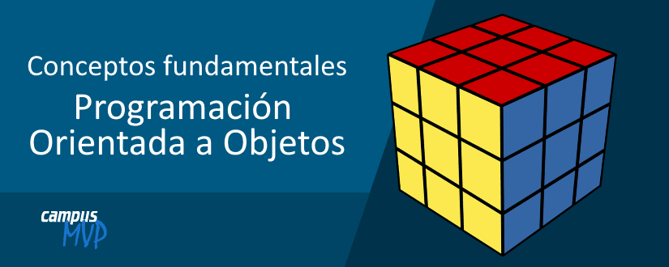

Es la habilidad de una función, método, variable u objeto de poseer varias formas distintas.
Su objetivo es implementar un estilo de programación llamado envío de mensajes en el que los objetos interactúan entre ellos mediante estos mensajes, que no son más que llamadas a distintas funciones.
Existen varios tipos de polimorfismos:
•Asignación: Es el que está más relacionado con el enlace dinámico.
•Puro: Se usa para nombrar a una función o método que puede recibir varios tipos de argumentos en tiempo de ejecución.
•Sobrecarga: Se aplica cuando existen dos o más funciones que comparten el mismo identificador, pero distinta lista de argumentos. El tipado de los argumentos se especifica en tiempo de compilación.
¿Se pueden sobrecargar métodos estáticos? Sí, es posible tener dos más métodos estáticos con el mismo nombre siempre que se diferencien en los parámetros de entrada.
¿Es posible sobrecargar la clase main() en Java? Sí, es posible siempre que definamos correctamente los parámetros de entrada como en el siguiente ejemplo.
class Demo{
public static void main(String[] args) {
System.out.println("Hello Folks"); // Hello Folks
Demo.main("Ducks");
}
// Sobrecargando
public static void main(String arg1) {
System.out.println("Hello, " + arg1); // Hello Ducks
Demo.main("Dogs","Cats");
}
public static void main(String arg1, String arg2) {
System.out.println("Hello, " + arg1 + " and " + arg2); // Hello Dogs and Cats
}
}
•Paramétrico: Existen funciones con el mismo nombre, pero se usan diferentes parámetros (nombre o tipo).
Aquí el método demo() se sobrecarga 3 veces: el primer método tiene 1 parámetro int, el segundo método tiene 2 parámetros int y el tercero tiene un parámetro doble. Por lo que para lidiar con esta variedad el método que se llamará está determinado por los argumentos que pasamos al llamar a los métodos. Esto sucede en tiempo de compilación en tiempo de ejecución, por lo que este tipo de polimorfismo se conoce también como polimorfismo en tiempo de compilación.
class Overload
{
void demo (int a)
{
System.out.println ("a: " + a);
}
void demo (int a, int b)
{
System.out.println ("a and b: " + a + "," + b);
}
double demo(double a) {
System.out.println("double a: " + a);
return a*a;
}
}
class MethodOverloading
{
public static void main (String args [])
{
Overload Obj = new Overload();
double result;
Obj .demo(10);
Obj .demo(10, 20);
result = Obj .demo(5.5);
System.out.println("O/P : " + result);
}
}
Salida de datos:
a: 10
a and b: 10,20
double a: 5.5
O/P : 30.25
•Inclusión: Es cuando se puede llamar a un método sin tener que conocer su tipo, así no se toma en cuenta los detalles de las clases especializadas, utilizando una interfaz común.
Un ejemplo muy básico en donde la clase Bishop sobreescribe el método move. Esto es el polimorfismo de inclusión.
abstract class Piece{
public abstract void move(byte X, byte Y);
}
class Bishop extends Piece{
@Override
public void move(byte X, byte Y){
}
}